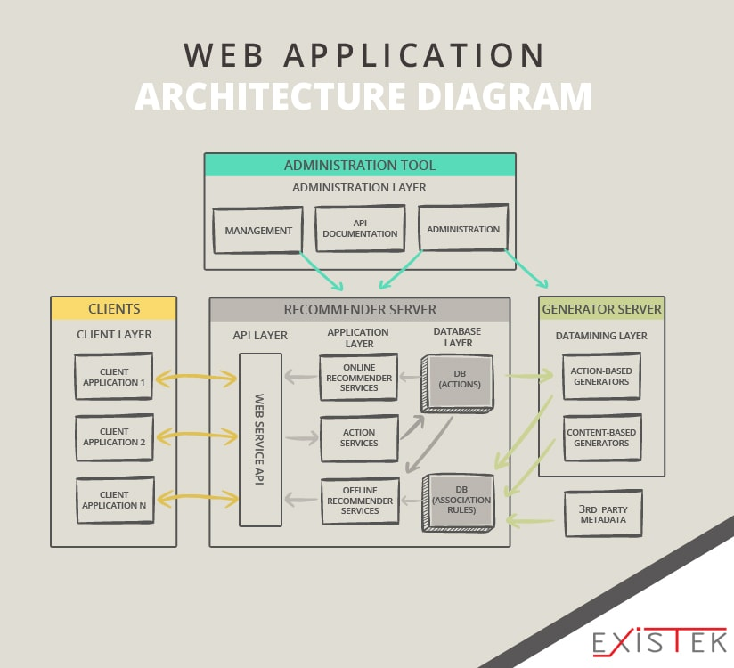

| Client-Server Concepts |
| Components of Web Application |
| Types of Web Content |
| Overview of HTTP |
| Generation of Dynamic Web Pages |
| Application Servers |
| Web Security |
WHAT IS CLIENT SERVER MODEL ?

The client-server model, or client-server architecture, is a distributed application framework dividing tasks between servers and clients, which either reside in the same system or communicate through a computer network or the Internet. The client relies on sending a request to another program in order to access a service made available by a server. The server runs one or more programs that share resources with and distribute work among clients. The client server relationship communicates in a request–response messaging pattern and must adhere to a common communications protocol, which formally defines the rules, language, and dialog patterns to be used. Client-server communication typically adheres to the TCP/IP protocol suite. TCP protocol maintains a connection until the client and server have completed the message exchange. TCP protocol determines the best way to distribute application data into packets that networks can deliver, transfers packets to and receives packets from the network, and manages flow control and retransmission of dropped or garbled packets. IP is a connectionless protocol in which each packet traveling through the Internet is an independent unit of data unrelated to any other data units. Client requests are organized and prioritized in a scheduling system, which helps servers cope in the instance of receiving requests from many distinct clients in a short space of time. The client-server approach enables any general-purpose computer to expand its capabilities by utilizing the shared resources of other hosts. Popular client-server applications include email, the World Wide Web, and network printing.
COMPONENTS OF WEB APPLICATION

Any web application, big or small, contains these major components:
WEB CONTENT
Web content refers to the textual, aural, or visual content published on a website. Content means any creative element, for example, text, applications, images, archived e-mail messages, data, e-services, audio and video files, and so on. Web content is the key behind traffic generation to websites. Creating engaging content and organizing it into various categories for easy navigation is most important for a successful website. Also, it is important to optimize the web content for search engines so that it responds to the keywords used for searching.
TYPES OF WEB CONTENT
There are two types of website content: text and media.TEXT : Text is the written content on the page. Good textual content follows the guidelines for online reading, such as breaking up the text with headers, bullets, and brief paragraphs. It also includes helpful links to internal and external sources so readers can take a deeper dive into the information presented. Finally, the most effective textual content is written with a global audience in mind, since websites can be read by viewers anywhere in the world.
MEDIA : The other type of website content is media (sometimes referred to as "multimedia"), which is any content that isn't text. It includes animation, images, sound, and video. The key to using any of them successfully is to not upstage the King. That means not interfering with the site's main messages with visual or technical distractions. Here are some tips for specific media types:
The best website animations are done in moderation. The exception to this rule is if the purpose of your site is something like showcasing animation services. For other types of sites, it's important to ensure the "wow factor" of the animation adds to, rather than distracts from, the primary message of the page.
The same is true for images, which are the most common way to add interest to web pages. You can use photos, art you've created yourself with a graphics editor, or stock images that you purchase online. You should optimize website images so they load and download quickly, so the artwork contributes to frictionless content viewing.
Sound can be embedded in a web page so readers hear it when they enter the site or when they activate a link to turn it on. However, keep in mind that not everyone appreciates website sound, especially if you have it turn on automatically with no way to turn it off. In fact, this implementation of website sound is akin to splash pages, in that it isn't used much anymore.
OVERVIEW OF HTTP

The Hypertext Transfer Protocol (HTTP) is an application-level protocol for distributed, collaborative, hypermedia information systems. This is the foundation for data communication for the World Wide Web (i.e. internet) since 1990. HTTP is a generic and stateless protocol which can be used for other purposes as well using extensions of its request methods, error codes, and headers.
Basically, HTTP is a TCP/IP based communication protocol, that is used to deliver data (HTML files, image files, query results, etc.) on the World Wide Web. The default port is TCP 80, but other ports can be used as well. It provides a standardized way for computers to communicate with each other. HTTP specification specifies how clients' request data will be constructed and sent to the server, and how the servers respond to these requests.
HTTP REQUEST
HTTP defines a set of request methods to indicate the desired action to be performed for a given resource. Although they can also be nouns, these request methods are sometimes referred to as HTTP verbs. Each of them implements a different semantic, but some common features are shared by a group of them: e.g. a request method can be safe, idempotent, or cacheable.
- GET : The GET method requests a representation of the specified resource. Requests using GET should only retrieve data.
- HEAD : The HEAD method asks for a response identical to that of a GET request, but without the response body.
- POST : The POST method is used to submit an entity to the specified resource, often causing a change in state or side effects on the server.
- PUT : The PUT method replaces all current representations of the target resource with the request payload.
- DELETE : The DELETE method deletes the specified resource.
- CONNECT : The CONNECT method establishes a tunnel to the server identified by the target resource.
HTTP RESPONSE

HTTP Response is the packet of information sent by Server to the Client in response to an earlier Request made by Client. HTTP Response contains the information requested by the Client. For example, the request to Weather Web Service made in the HTTP Request tutorial will contain the weather details of the location.An HTTP response header primarily enables communicating and responding to user requests received on a Web server or the website. An HTTP response header works when a webpage or HTTP request is generated from the client’s Web browser. This request is received in the form of an HTTP request header to the Web server containing the source address, requested data and its format and other data. The Web server responds back by creating an HTTP response header and attaching the requested data with it. The information embedded with the HTTP response header includes the destination IP address, data type, host address and more.
GENERATION OF DYNAMIC WEB PAGES
A dynamic web page is a web page that displays different content each time it's viewed. For example, the page may change with the time of day, the user that accesses the webpage, or the type of user interaction. There are two types of dynamic web pages.
CLIENT-SIDE SCRIPTING
* Web pages that change in response to an action within that web page, such as a mouse or a keyboard action, use client-side scripting.
* Client-side scripts generate client-side content. Client-side content is content that's generated on the user's computer rather than the server. In these cases, the user's web browser would download the web page content from the server, process the code that's embedded in the web page, and then display the updated content to the user.
* Scripting languages such as JavaScript and Flash allow a web page to respond to client-side events.
SERVER-SIDE SCRIPTING
* Web pages that change when a web page is loaded or visited use server-side scripting.
* Server-side content is content that's generated when a web page is loaded. For example, login pages, forums, submission forms, and shopping carts, all use server-side scripting since those web pages change according to what is submitted to it.
* Scripting languages such as PHP, ASP, ASP.NET, JSP, ColdFusion and Perl allow a web page to respond to submission events.
WHAT IS AN APPLICATION SERVER?
An application server is a mixed framework of software that allows both the creation of web applications and a server environment to run them.It can often be a complex stack of different computational elements running specific tasks that need to work as one to power multiple clouds and web-based software and application.Sitting between the primary web-based server tier and the back-end tier of a database server, the application server is essentially a go-between for the database server and the users of the business or consumer apps it supports through putting various protocols and application programming interfaces (APIs) to use.
An application server is designed to install, operate and host applications and associated services for end users, IT services and organizations and facilitates the hosting and delivery of high-end consumer or business applications. Depending on what is installed, an application server can be classified in a number of ways, such as a web server, database application server, general purpose application server or enterprise application server. It's commonly paired with a web server or contains a web server, which means the two can be converged and named a web application server. It is also versatile enough to be used with other application servers simultaneously.
WEB SECURITY
Web security is also known as “Cybersecurity”. It basically means protecting a website or web application by detecting, preventing and responding to cyber threats.Websites and web applications are just as prone to security breaches as physical homes, stores, and government locations. Unfortunately, cybercrime happens every day, and great web security measures are needed to protect websites and web applications from becoming compromised.